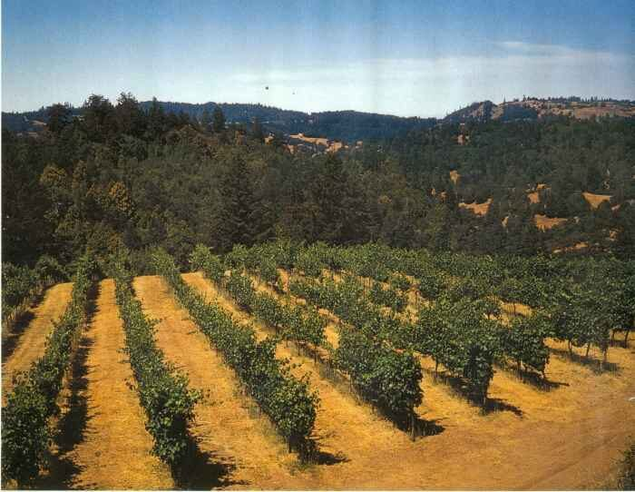
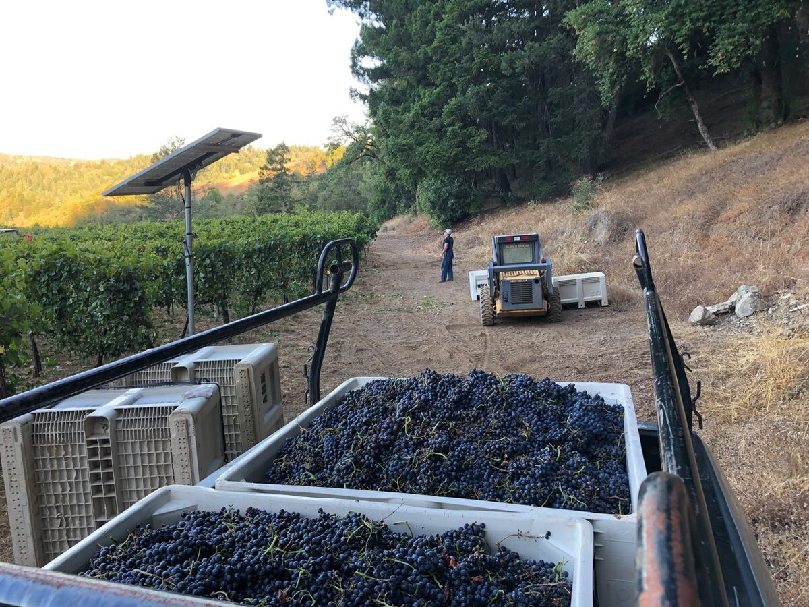
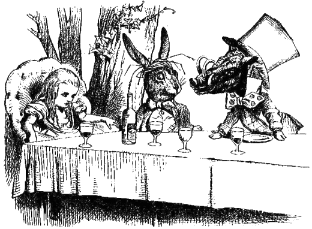

Estate Zinfandel
Planted in 1982 with about ten percent Petite Sirah blended in. Big and jammy, with pepper, spice, black raspberry and dark cherry. Our 1992 won gold and best of class at the Sonoma County Harvest Fair.

Fort Ross-Seaview · Sonoma Coast
Small-lot estate wines, grown organically and made by hand in the hills above Fort Ross since 1990.
Welcome
Wild Hog Vineyard is a small family owned and operated winery and vineyard in the hills between Cazadero and Fort Ross on the Sonoma Coast. The owners, Daniel and Marion Schoenfeld, have transformed the rugged mountain property into a beautiful lush garden resplendent with vineyard, orchard, vegetable beds, and fragrant flowers.
We have been making wine since 1977 and opened the winery in 1990. The wine making practices follow the traditional ways: the highest quality grapes are used, the wine is aged in small oak barrels, and the complete process is carefully tended by hand from the moment the grapes arrive until they leave as bottled wine.
Read about the vineyard
Estate bottled
Grown on a ridge at 1,400 feet in the Fort Ross-Seaview appellation, picked by hand, and never filtered.
Planted in 1982 with about ten percent Petite Sirah blended in. Big and jammy, with pepper, spice, black raspberry and dark cherry. Our 1992 won gold and best of class at the Sonoma County Harvest Fair.
Three acres first planted in 1981. Characteristic cherry-berry fruit with intense flavors and big structure. Three to four hundred cases in an average year.
One acre planted in 2000 and netted against the birds. Depending on the year it may be delicate or full bodied. About a hundred cases a year.

“One of life’s finest pleasures is sharing a delicious meal and fine wine with good friends.”
We at Wild Hog invite you to become part of that enjoyment.